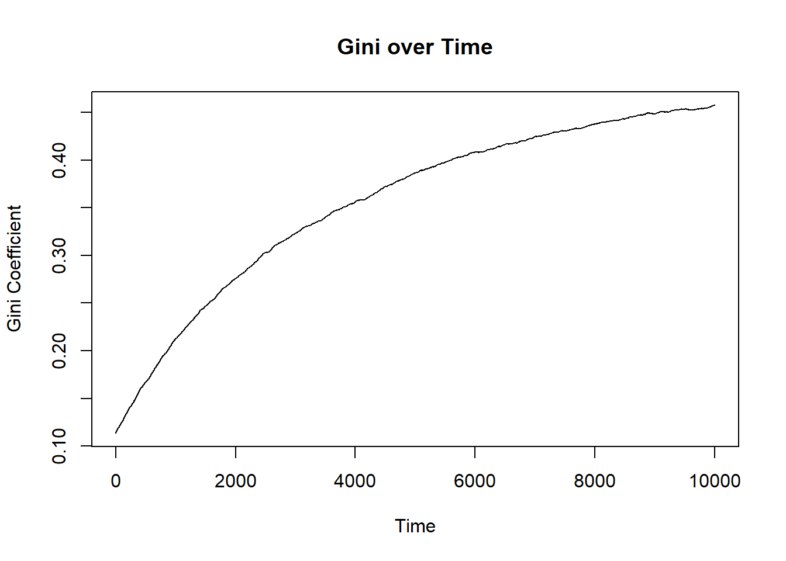
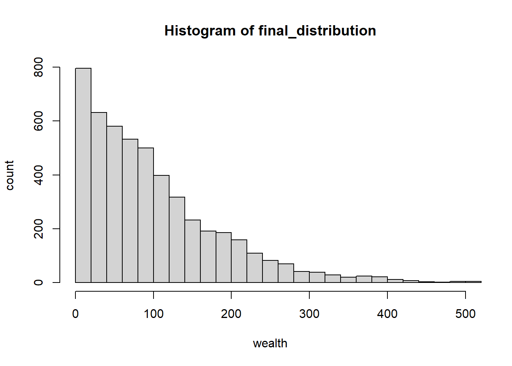

Code
N <- 5000 # 5000 actors in the population
MU <- 100 # mean wealth = 100
dis <- rnorm(N, mean = MU, sd = MU/5)1. Create normal distribution
N <- 5000 # 5000 actors in the population
MU <- 100 # mean wealth = 100
dis <- rnorm(N, mean = MU, sd = MU/5)2. Calculate Gini coefficient
gini <- function(dis) {
y <- sort(dis) # sortiere die Verteilung
n <- length(y) # Anzahl der Beobachtungen
numer <- sum((2 * (1:n) - n - 1) * y)
denom <- n * sum(y)
gini <- numer / denom # Gini-Koeffizient
return(gini)
}3. Create a histogram of the initial distribution
hist(dis, xlab = "wealth", ylab = "count", breaks = 30, xlim = c(0, 200))
4. Create transaction function: random split (ChatGPT supported)
random_split <- function(A, B) {
# Gesamtbetrag im Topf
pot <- A + B
# Zufällige Aufteilung des Topfes
share <- runif(1, 0, pot) # 1 Zufallszahl erzeugen, 0 = Minimum, pot = Maximum
# Rückgabe der beiden Anteile
return(c(share, pot - share))
}
random_split(100, 100)[1] 1.437338 198.5626625. Create interaction function (ChatGPT supported)
anyone <- function(N) {
return(sample(1:N, 2)) # Nimmt 2 zufällige, eindeutige Zahlen aus 1 bis N
}
# My initial idea: sample(length(y), 2) # random sample from the distribution (index number)6. Simulation (with ChatGPT)
step <- function(dis, transaction = random_split, interaction = anyone) {
# Zwei zufällige Individuen auswählen
indices <- interaction(length(dis))
i <- indices[1]
j <- indices[2]
# Transaktion durchführen und neue Verteilung speichern
dis[c(i, j)] <- transaction(dis[i], dis[j])
return(dis)
}
simulate <- function(dis, T, step_function = step, transaction = random_split, interaction = anyone) {
populations <- list(dis) # Kopie der Population zu Beginn
# Schleife für T Schritte
for (t in seq_len(T)) {
dis <- step_function(dis, transaction, interaction)
populations[[t + 1]] <- dis # Speichert die Population nach jedem Schritt
}
return(populations)
}
T <- 10000 # Anzahl der Schritte
result <- simulate(dis, T)
gini_over_time <- sapply(result, gini)7. Plot of changing Gini coefficient (with ChatGPT)
# Plot des Gini-Koeffizienten über die Zeit
plot(gini_over_time, type = "l", xlab = "Time", ylab = "Gini Coefficient", main = "Gini over Time")
8. Plot of resulting distribution (with ChatGPT)
final_distribution <- result[[T + 1]] # Verteilung nach T Schritten
hist(final_distribution, xlab = "wealth", ylab = "count", breaks = 30, xlim = c(0, 500))